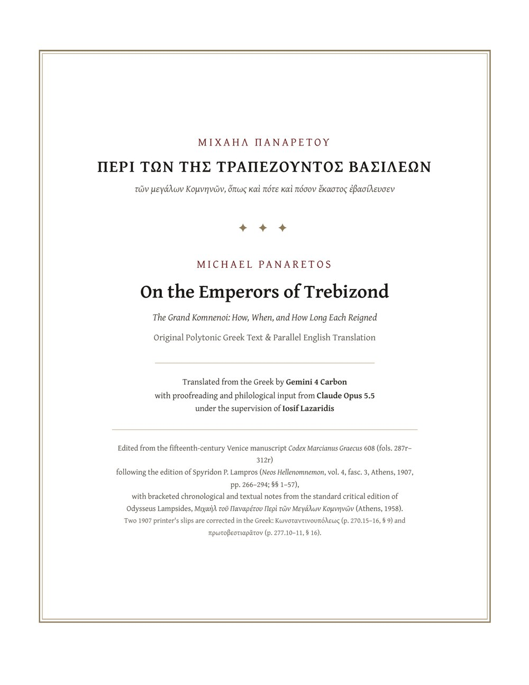

Μιχαὴλ Παναρέτου, Περὶ τῶν τῆς Τραπεζοῦντος βασιλέων
Michael Panaretos, On the Emperors of Trebizond
The Greek text and an English translation, side by side
Download the PDF 22 pages · 0.4 MBMichael Panaretos, protosebastos and protonotarios at the court of Trebizond, wrote this short chronicle of the Grand Komnenoi: when and how long each emperor reigned, from Alexios I's taking of the city in April 1204. For the reign of Alexios III (1349–1390) he writes as one who took part: wars with the Turkmen emirs, the Genoese and the Venetians, plague, eclipses, royal marriages, and his own embassy to Constantinople in 1363. The entries end in 1426. The chronicle survives in a single manuscript and is the main source for the history of the empire.
- Greek text
- Sp. P. Lampros, Τὸ Τραπεζουντιακὸν Χρονικὸν τοῦ πρωτοσεβαστοῦ καὶ πρωτονοταρίου Μιχαὴλ Παναρέτου, Νέος Ἑλληνομνήμων 4 (Athens 1907), pp. 266–294, from Codex Marcianus Graecus 608, fols. 287r–312r. Where the critical edition of O. Lampsides (Athens 1958), the manuscript or the calendar corrects Lampros, the English gives the correct reading in brackets.
- Translation
- From the Greek by Gemini 4 Carbon, with proofreading and philological input from Claude Opus 5.5, under the supervision of Iosif Lazaridis
- Layout
- 57 sections, Greek and English in parallel columns, with Lampros's page numbers